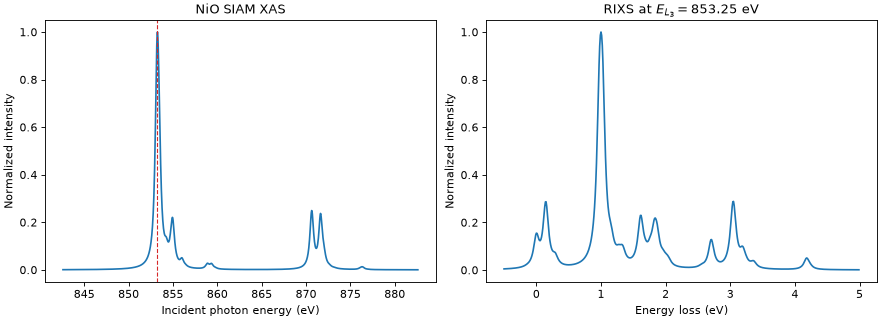

NiO Anderson impurity model XAS and RIXS
This example uses model_siam_2d1p() to calculate Ni
\(L_{2,3}\)-edge XAS and RIXS for a NiO Anderson impurity model. The model
contains a correlated Ni \(3d\) shell and one bath site representing ten
symmetry-adapted O \(2p\) ligand spin-orbitals. Hybridization allows the
calculation to include ligand-to-metal charge-transfer configurations.
The nominal impurity occupancy is nd=8. The wrapper fixes one full
bath, so the initial valence sector contains 18 electrons; the intermediate
sector contains 19 valence electrons and five core electrons. The bath has
no Coulomb interactions.
The model parameters are specified before constructing the Hamiltonian:
slatercontains the initial three d-d integrals and the intermediate seven d-d and d-p integrals. Atomic multipolar integrals are scaled to 80%, and the monopole integrals are specified directly.Delta=4.7eV is the configuration-average energy cost of transferring one bath electron to the impurity, without crystal field, hybridization, or multipolar Coulomb interactions. It is not a bare shell-center splitting. The wrapper recovers the average interactions fromslaterand usesCT_imp_bath()andCT_imp_bath_core_hole()to set the shell centers.impurity_levelsandbath_levelseach contain five orbital energies ordered(dz2, dzx, dzy, dx2-y2, dxy). The mean of each set is subtracted before setting its center according to the charge transfer energy. Each value applies to both spins. Cubic splittings are 0.56 eV on the impurity and 1.44 eV on the bath.hybgives five matching-orbital hoppings in that same order: 2.06 eV for the two eg orbitals and 1.21 eV for the three \(t_{2g}\) orbitals.v_socgives initial and intermediate impurity SOC;c_socgives core SOC.ext_Bapplies an effective exchange field along [112], acting on spin.om_shift=857.6eV aligns the spectrum with the Ni L edge; the wrapper combines this with its internally derived core energy.
The first seven outputs from
model_siam_2d1p() pass to
get_ops(). Pass the eighth output, shift, to
ed() to subtract the core shell-level energy during
diagonalization and restore it in the returned eigenvalues. The ED, XAS, and RIXS
steps select the SciPy backend. Temperature (300 K), photon geometry,
polarization, and lifetime broadening are supplied to the spectrum routines.
"""Calculate NiO Anderson-impurity-model XAS and RIXS spectra."""
import matplotlib.pyplot as plt
import numpy as np
import edrixs
# Nominal d8 impurity; the wrapper fixes one full bath and a p core.
nd = 8
# Screened Slater integrals in eV.
info = edrixs.get_atom_data('Ni', '3d', nd, edge='L3')
F0_dd = 7.8
F2_dd = 0.8 * info['slater_i'][1][1]
F4_dd = 0.8 * info['slater_i'][2][1]
F0_dp = 8.9
F2_dp = 0.8 * info['slater_n'][4][1]
G1_dp = 0.8 * info['slater_n'][5][1]
G3_dp = 0.8 * info['slater_n'][6][1]
slater = (
[F0_dd, F2_dd, F4_dd],
[F0_dd, F2_dd, F4_dd, F0_dp, F2_dp, G1_dp, G3_dp],
)
# Charge-transfer energy. This is defined in the atomic limit
# (without crystal field, hybridization, or multipolar Coulomb
# interactions) as the energy cost of transferring one electron
# from the bath to the impurity.
Delta = 4.7
# Five orbital energies in (dz2, dzx, dzy, dx2-y2, dxy) order, in eV.
# Each set is recentered internally, then duplicated for the two spins.
ten_dq = 0.56
impurity_levels = ten_dq * np.array([0.6, -0.4, -0.4, 0.6, -0.4])
ten_dq_bath = 1.44
bath_levels = ten_dq_bath * np.array([0.6, -0.4, -0.4, 0.6, -0.4])
hyb = [2.06, 1.21, 1.21, 2.06, 1.21]
# Keep the original parameterization: equal impurity SOC in both states.
# The second entry can instead be info['v_soc_n'][0].
v_soc = (info['v_soc_i'][0], info['v_soc_i'][0])
# Effective exchange field along the [112] direction.
exchange = 6 * 0.027
ext_B = exchange / (2 * np.sqrt(6)) * np.array([1.0, 1.0, 2.0])
# Align the calculated spectrum with the Ni L edge. The wrapper handles
# the CT-derived core energy and returns the seven operator inputs plus the ED energy shift.
edge_shift = 857.6
*problem, shift = edrixs.model_siam_2d1p(
slater=slater, nd=nd, Delta=Delta,
impurity_levels=impurity_levels, bath_levels=bath_levels, hyb=hyb,
v_soc=v_soc, c_soc=info['c_soc'], om_shift=edge_shift,
ext_B=ext_B, on_which='spin', sparse_U=True,
)
backend = 'scipy'
hmat_i, hmat_n, trans_ops = edrixs.get_ops(*problem, backend=backend)
eval_i, evec_i = edrixs.ed(
hmat_i, shift=shift,
num_evals=3,
backend=backend,
backend_kws={'tol': 1e-10, 'maxiter': 1000, 'seed': 0},
)
# Isotropic XAS
temperature = 300
thin = 0.0
phi = 0.0
energy = edge_shift + np.linspace(-15, 25, 1000)
gamma_c = 0.48 / 2
xas = edrixs.xas(
eval_i, evec_i, hmat_n, trans_ops, energy,
gamma_c=gamma_c,
thin=thin,
phi=phi,
pol_type=[('isotropic', 0)],
temperature=temperature,
backend=backend,
backend_kws={'nkryl': 120},
)[:, 0]
xas /= xas.max()
# Calculate RIXS at the isotropic L3 maximum. The incoming beam is linearly
# polarized; the two outgoing polarization channels are summed below.
l3_window = energy < edge_shift + 5
resonance_energy = energy[l3_window][np.argmax(xas[l3_window])]
energy_loss = np.arange(-0.5, 5, 0.01)
rixs = edrixs.rixs(
eval_i, evec_i, hmat_i, hmat_n, trans_ops,
np.array([resonance_energy]), energy_loss,
gamma_c=gamma_c,
gamma_f=0.05,
thin=thin,
thout=np.pi / 2,
phi=phi,
pol_type=[
('linear', 0, 'linear', 0),
('linear', 0, 'linear', np.pi / 2),
],
temperature=temperature,
backend=backend,
backend_kws={
'nkryl': 190,
'linsys_tol': 1e-10,
'linsys_maxiter': 2000,
},
)
rixs_spectrum = rixs[0].sum(axis=-1)
rixs_spectrum /= rixs_spectrum.max()
# Plot XAS and the RIXS
fig, (ax_xas, ax_rixs) = plt.subplots(
1, 2, figsize=(11, 4), constrained_layout=True
)
ax_xas.plot(energy, xas)
ax_xas.axvline(resonance_energy, color='tab:red', linestyle='--', linewidth=1)
ax_xas.set_xlabel('Incident photon energy (eV)')
ax_xas.set_ylabel('Normalized intensity')
ax_xas.set_title('NiO SIAM XAS')
ax_rixs.plot(energy_loss, rixs_spectrum)
ax_rixs.set_xlabel('Energy loss (eV)')
ax_rixs.set_ylabel('Normalized intensity')
ax_rixs.set_title(r'RIXS at $E_{L_3}=%.2f$ eV' % resonance_energy)
plt.show()
